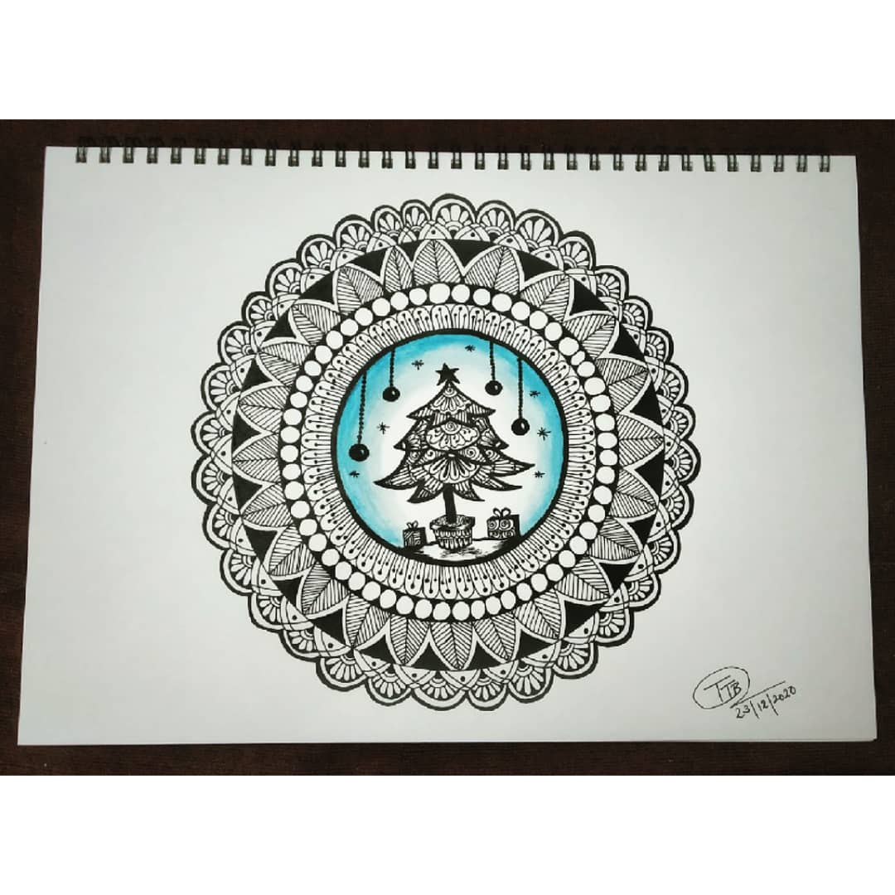

MERRY CHRISTMAS
In frame is a mandala design with a small christmas scenery. one can make this design on anything to be gifted or to decorate some stuff .
so, christmas is celebrated to remember the birth of Jesus Christ, who Christians believe is the Son of God.
The name 'Christmas' comes from the Mass of Christ (or Jesus).
A Mass service (which is sometimes called Communion or Eucharist) is where Christians remember that Jesus died for us and then came back to life.
Materials Required :
A-4 size paper.
Any black gel pen
Scale and Pencil.
Blue water colour
paint brush
compass
steps one can follow(if needed) :
First take a plain paper and draw a circle using a compass.
Start making circles inside the outer circle.
After all this is done you can start drawing different
patterns or designs and fill up all the circles.
Then paint the middles circle with light blue starting fromedges to be dark to center be light, leave it til it dries the start
make the christmastree or any christmas scenery using any black gel pen.